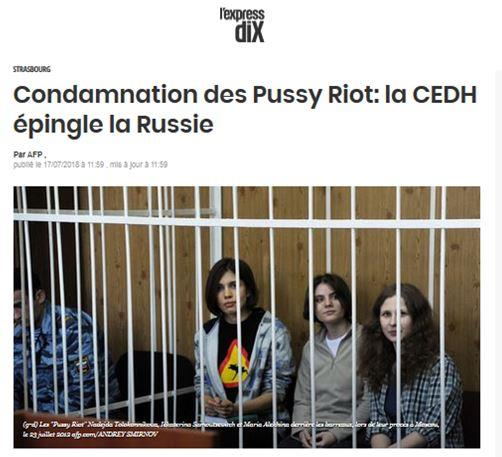
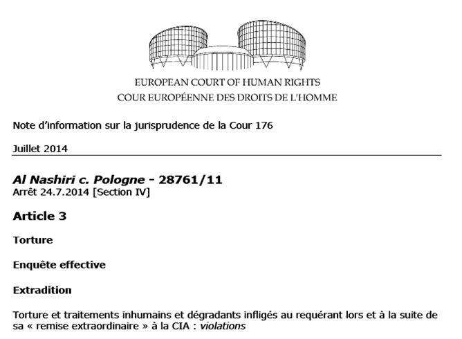
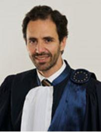
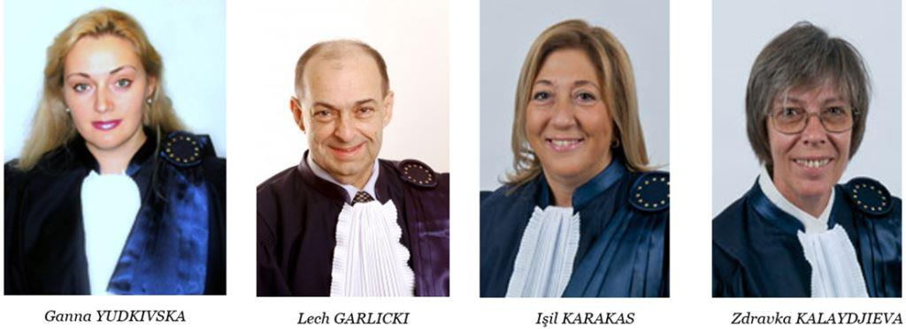
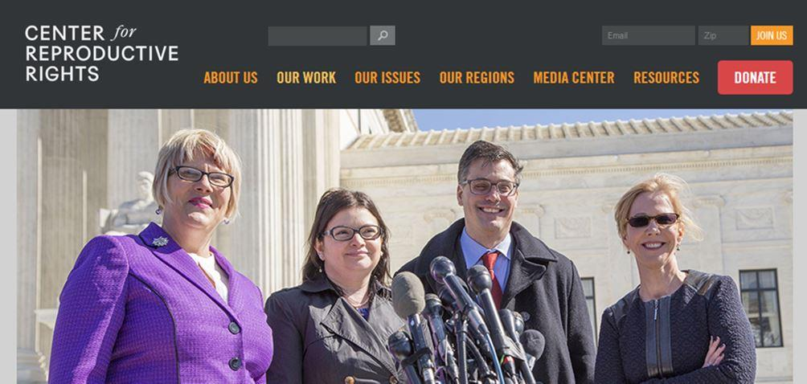
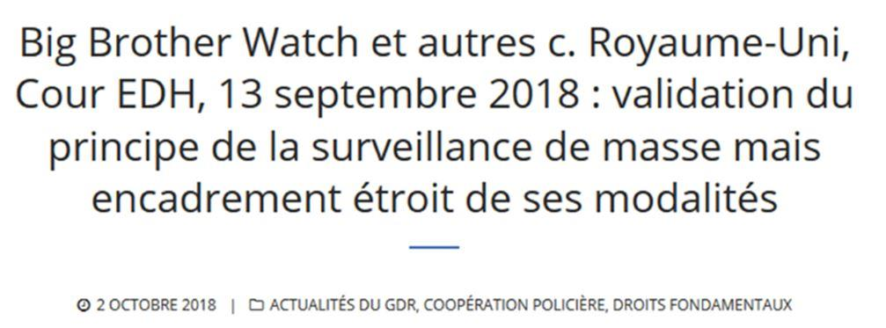
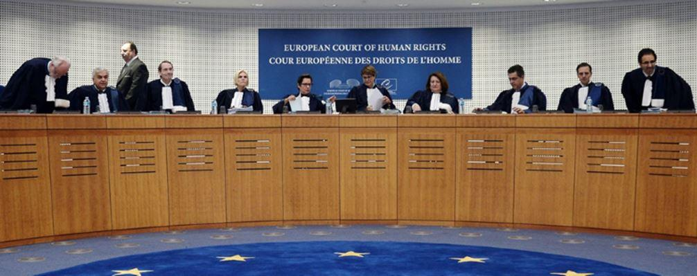

D’expérience, on peut penser que, dans certaines affaires, la Cour accepte les demandes de certaines ONG seulement, et en rejette d’autres, sans respecter nécessairement un équilibre idéologique1 ; dans d’autres affaires, elle fait le choix de n’admettre aucune ONG2 ou, à l’inverse, de les accepter toutes. Mais faute de règles de transparence, il est difficile de connaître précisément toutes les affaires dans lesquelles les ONG sont impliquées à la Cour, en particulier lorsqu’elles représentent les requérants.
À titre d’illustration, la base de données de la Cour (Hudoc) fait apparaître que la Fondation Helsinki pour les droits de l’homme de Pologne est intervenue 9 fois comme représentant des requérants dans des affaires jugées et publiées entre 2009 et 2019. Or selon les rapports d’activité de cette organisation3, elle déclare avoir, au cours de la seule année 2017, introduit 16 requêtes et défendu 32 dossiers devant la CEDH. D’autres ONG fondées ou financées par l’OSF ont agi visiblement comme tiers intervenants.
On peut aussi citer ici le cas étrange et presque surréaliste des Pussy Riot (affaire Mariya Alekhina et autres c. Russie de 20184) qui ont été défendues devant la CEDH par un dirigeant de l’Open Society Justice Initiative, M. Yonko Grozev, peu avant qu’il soit élu juge à cette même Cour. Alors, la Cour donne raison aux activistes féministes contre la Russie et condamne cette dernière à payer les indemnités de leur avocat… c’est-à-dire le juge Grozev lui-même. Quelle peut-être l’impartialité de la cour quand l’avocat des parties devient juge avant que le jugement soit rendu ?5
Il arrive aussi souvent que plusieurs des ONG étudiées dans ce rapport agissent ensemble, l’une comme représentante des requérants, et les autres comme tierces parties. Ainsi, dans l’importante affaire Al Nashiri c Pologne6, les requérants étaient représentés par l’Open Society Justice Initiative, et étaient soutenus par la Fondation Helsinki pour les droits de l’homme, la Commission Internationale des Juristes et Amnesty International, toutes trois financées par l’OSF.
La chambre était présidée par Mme Ineta Ziemele, membre fondateur de la section lettonne de la Commission Internationale des Juristes et Professeur à l’École supérieure de droit de Riga, fondée et cofinancée par l’OSF.
Ce manque de clarté ne permet pas de connaître l’étendue de l’action des ONG auprès de la Cour, mais plus encore, il est susceptible d’affecter la procédure, non seulement parce que le véritable requérant est parfois l’ONG qui agit au moyen d’un cas particulier, mais aussi parce que seuls les anciens collaborateurs de ces ONG, juges ou juristes du greffe, sont capables d’identifier quel groupe est « derrière » la requête, soit qu’ils en aient été informés informellement par des relations, soit qu’ils connaissent l’avocat. Dans ce cas, les liens éventuels entre juges et requérants sont moins visibles, mais non moins existants.
Les juges face aux affaires introduites par, ou avec le soutien de, « leur » ONG
 L’examen systématique des 185 affaires publiées dans lesquelles les 7 ONG ont agi depuis 2009 fait apparaître que dans 88 cas, des juges ont statué alors même qu’ils avaient des liens avec une ONG impliquée visiblement. Seules les affaires publiées par la Cour sur Hudoc –c’est-à-dire ayant fait l’objet d’un jugement en grande chambre, chambre ou comité- peuvent être prises en compte dans cette étude, ce qui exclut la grande majorité des recours qui sont rejetés par décision d’un juge unique.
Paulo Pinto de AlbuquerqueIl apparaît que 18 des 22 juges cités précédemment ont siégé dans des affaires impliquant l’ONG avec laquelle ils avaient collaboré :
Concernant l’AIRE Centre, le juge Eicke a siégé dans une affaire où cette ONG était tierce partie.
Concernant Amnesty International, le juge Pinto de Albuquerque a siégé dans une affaire où cette organisation était requérante, et dans une autre où elle était tierce partie. Le juge Šikuta a siégé dans une affaire où cette organisation était tierce partie.
Concernant les Comités Helsinki, six des sept juges liés à ces organisations ont siégé dans des affaires dans lesquelles ces comités sont intervenus comme requérant ou comme tierce partie. Les juges Yudkivska, Grozev, Garlicki, Karakaş et Kalaydjieva ont siégé respectivement dans quatre, six, onze, sept et douze affaires dans lesquelles un comité a agi comme tierce partie, ainsi que dans quatre, deux, huit, trois et neuf affaires dans lesquelles un comité était requérant ou son représentant. Le juge Šikuta a quant à lui siégé dans deux affaires où un comité agissait comme tierce partie. Concernant le juge Grozev, il s’agit du comité Bulgare dont il fut fondateur et membre de 1993 à 2013.
Concernant la Commission Internationale des Juristes (CIJ), trois des cinq juges liés à cette ONG ont siégé dans des affaires dans lesquelles elle est intervenue comme tierce partie : le juge Motoc, Kucsko-Stadlmayer et Ziemele dans respectivement trois, quatre et six affaires chacuns.
Concernant Human Rights Watch, le juge Pavli a siegé dans une affaire où cette organisation intervenait comme tierce partie.
Concernant l’Open Society Foundation (OSF) et ses branches, onze des douze juges ayant eu des liens forts avec cette organisation ont jugé des affaires dans lesquelles elle est intervenue. Les juges Grozev, Mits, Pavli, Šikuta et Turković ont chacun siégé dans une affaire où l’OSF intervenait comme tierce partie. Le juge Mijović a siégé dans quatre affaires où l’OSF était tiers intervenant. Les juges Sajó et Vučinić ont chacun siégé dans trois affaires où l’OSF était partie tierce ainsi que le juge Garlicki dans deux de ces affaires. La juge Ziemele a siégé dans deux affaires où l’Open Society était tiers intervenant et une affaire où l’Open Society représentait le requérant. La juge Laffranque a siégé dans deux affaires où l’Open Society intervenait : une en tant que représentant du requérant et l’autre en tant que tiers intervenant.
Kenneth ROTH, directeur exécutif d'Human Rights Watch depuis 1993, lors de son intervention à la 44e Munich Conference on Security Policy en 2008.Il convient d’ajouter à ces affaires, secondairement, toutes celles dans lesquelles il existe un lien indirect entre l’ONG et le juge, par l’intermédiaire des financements de l’OSF. En effet, dans de très nombreux cas, un juge issu de l’OSF est susceptible de juger des affaires introduites ou soutenues par des ONG financées par l’OSF ; ou inversement, un juge issu d’une ONG financée par l’OSF est susceptible de juger des affaires introduites par l’OSF ou par ses organisations affiliées. L’OSF déclare que le lien établi avec ses bénéficiaires n’est pas seulement financier, mais vise à établir de véritables « alliances pour atteindre des objectifs stratégiques du programme de l’open society »7. L’OSF et les ONG qu’elle finance partagent ainsi largement les mêmes objectifs.
Parmi les centaines d’organisations gravitant dans l’orbite de l’OSF, certaines sont actives devant la Cour et bénéficient d’un important financement prélevé sur les 32 milliards de dollars8 dont a été doté l’OSF depuis 1984. C’est le cas de Human Right Watch qui a reçu 100 millions de dollars américains depuis 20109 (et dont le président d’honneur fut aussi président de l’OSF)10, mais aussi des Comités Helsinki qui ont reçu plus deux millions et demi de dollars en 2016, dont 460 000 pour le Comité bulgare, 610 000 pour le Comité hongrois, 1 325 000 pour la Fondation Helsinki pour les droits de l’homme de Pologne11. D’ailleurs, selon les données figurant sur le registre de transparence de l’Union européenne pour l’année 201712, l’OSF a doté cette Fondation Helsinki de Pologne à hauteur de 40 % de son budget global13. La Commission Internationale des Juristes a reçu 650 000 dollars en 2017, Amnesty International a reçu environ 300 000 dollars en 2016. Interights fut aussi financé en son temps14.
D’autres organisations actives à la CEDH dans des affaires stratégiques, telles que l’ILGA et le Center for Reproductive Rights ont aussi reçu respectivement 650 000 et 365 000 dollars en 2016.
Pour certaines de ces ONG, il est relativement factice de les distinguer de l’OSF tant elles en dépendent financièrement. Les juges ayant eu des responsabilités au sein de ces ONG ne peuvent ignorer ces liens. Le nombre d’affaires laissant apparaître un lien indirect est tellement considérable que nous n’avons pas entrepris de l’évaluer totalement15. L’affaire Big Brother Watch c. Royaume-Uni16, relative à la protection des données, est emblématique des rapports ambigus entre ONG et la Cour. Parmi les 16 requérants, 14 sont des ONG dont 10 sont financées par l’OSF. Il s’agit de l’American Civil Liberties Union (ACLU), English PEN, Amnesty International, le National Council for Civil Liberties (Liberty), le Bureau of Investigative Journalism, Privacy International, l’Association Canadienne des Libertés Civiles, l’Union hongroise pour les libertés civiles, le Legal Resources Centre et l’Open Rights Group. II en est de même des tierces parties, parmi lesquels figurent l’Open Society Justice Initiative, Human Rights Watch, la Fondation Helsinki pour les droits de l’homme, la Commission internationale de juristes, Access Now et American PEN, qui sont également financés par l’OSF. La communauté d’intérêts et les liens institutionnels et financiers entre requérants et intervenants jettent une ombre sur l’impartialité des tierces parties et mettent en cause l’égalité des armes devant le juge car le gouvernement défendeur se retrouve seul face à une nuée d’ONG qui, bien que se présentant distinctement, poursuivent le même objectif et sont liées. De façon plus significative encore, au moins six des 17 juges ayant siégé en Grande Chambre dans cette affaire sont, eux-aussi, liés aux ONG requérantes et intervenantes17.
Pour autant, l’on note très peu de reports liés aux liens entre les juges et les ONG. On compte 313 déports durant les dix dernières années18 ; ils sont principalement le fait de quelques juges (Bîrsan dans 110 affaires, Kalaydjeva dans 53 affaires, Motoc dans 24 affaires, López Guerra dans 18 affaires, Grozev dans 13 affaires ou encore les juges Spielmann, Poalelungi et Jäderblom dans 6 affaires chacun). Dans seulement 12 de ces 313 affaires, le déport du juge semble motivé par l’existence d’un lien entre celui-ci et une ONG impliquée dans l’affaire. Dans 9 cas, M. Grozev s’est déporté alors que son ONG agissait comme requérante ou comme représentante du requérant19. Dans trois autres affaires, ce sont les juges Garlicki, Kalaydjieva et Motoc qui se sont déportés chacun alors que « leur » ONG participait à la procédure20. M. Grozev s’est en outre déporté de deux affaires représentées par son ancienne associée21, et d’une affaire qu’il avait lui-même introduite22. Dans d’autres affaires en revanche, M. Grozev ne s’est pas déporté alors que son ONG représentait le requérant23 ou intervenait comme tierce partie24. Il a aussi siégé dans 5 affaires où intervenait la Fondation Helsinki de Pologne.
La CEDH est une juridiction qui présente un caractère extraordinaire. En outre, du fait de la brièveté du texte de la Convention et de ses protocoles les juges de Strasbourg disposent d’un très grand pouvoir d’appréciation, en comparaison de celui des juges nationaux. Selon le préambule de la Convention, les juges ont le devoir non seulement de protéger mais également de développer les droits et libertés de la Convention. Il en résulte que le texte est considéré comme un « instrument vivant à interpréter (…) à la lumière des conditions de vie actuelles »25. Ce large pouvoir d’interprétation et cette approche dynamique de la Convention peuvent avoir de grandes conséquences sur les droits nationaux puisque les affaires soumises à la Cour sont très sensibles et diverses. Or, plus une instance judiciaire est élevée, plus son pouvoir d’interprétation est étendu, et plus sa mission et sa composition sont politiques. La sélection et la nomination des juges revêtent donc une importance stratégique. Il est alors fondamental d’instaurer un équilibre entre le corps principal (les instances publiques) et ses corps complémentaires (les ONG). Les ONG, telles des corps intermédiaires, comblent le « vide démocratique » de la gouvernance supranationale, mais ne sont pas elles-mêmes démocratiques pour autant. Les valeurs qu’elles défendent peuvent, certes, leur conférer un prestige politique et une légitimité idéologique, mais ceux-ci ne peuvent remplacer la légitimité démocratique. La situation exposée dans ce rapport révèle l’importance de la présence, et donc de l’influence potentielle, de certaines organisations privées dans le système intergouvernemental de protection des droits de l’homme, et ce jusqu’au sein de la CEDH. Ce qui ne manque de poser la question de savoir si un militant peut, du jour au lendemain, adopter la forma mentis d’un magistrat professionnel.
G.P.
NOTES ET RÉFÉRENCES
1. Ce fut le cas par exemple dans l’affaire Vallianatos et autres c. Grèce de 2013 concernant la discrimination dans la reconnaissance juridique par l’État des couples hétérosexuels et homosexuels où les quatre ONG autorisées à intervenir étaient toutes favorables à la condamnation de la Grèce. Il s’agissait de la CIJ, de l’ILGA Europe, de la Fédération internationale des ligues des droits de l’homme et du AIRE Centre. CEDH, Vallianatos et autres c. Grèce [GC], n° 29381/09 et n° 32684/09, 7 novembre 2013.
2. Par exemple, dans l’affaire Paradiso et Campanelli c. Italie (n° 25358/12, 27 janvier 2015 et même affaire devant la Grande Chambre, jugée le 24 janvier 2017), toutes les demandes d’intervention ont été refusées par la Cour.
3. Rapports de la Fondation Helsinki des droits de l’homme de Pologne : Landmark human rights cases 2017, https://www.hfhr.pl/wp-content/uploads/2018/11/Raport-litygacyjny-ENG-20181108-WEB-rozk%C5%82ado%CC%81wki.pdf (consulté le 01/02/2020); Human Rights in Strategic Litigation 2018 Report, https://www.hfhr.pl/wp-content/uploads/2019/01/raport-roczny-PSP-2018-EN.pdf (consulté le 01/02/2020).
4. CEDH, Mariya Alekhina et autres c. Russie, n° 38004/12, 17 juillet 2018.
5. Cette phrase est tirée de la grande enquête « Comment George Soros a infiltré la Cour européenne des droits de l’homme » (B. Lejeune) parue dans la revue Valeurs Actuelles, N°4343, 20-26 février 2020, p. 34
6. CEDH, Al Nashiri c Pologne, n° 28761/11, 24 juillet 2014.
7. https://www.opensocietyfoundations.org/uploads/2519658d-a95b-44bd-b9d3-edec9039de24/partners_20090720_0.pdf (traduction libre, consulté le 01/02/2020).
8. https://www.opensocietyfoundations.org/george-soros (consulté le 01/02/2020).
9. Bilan financier de 2012 de l’Human Rights Watch : https://www.hrw.org/sites/default/files/related_material/financial-statements-2012.pdf (consulté le 01/02/2020) ; voir également : https://www.hrw.org/news/2010/09/07/george-soros-give-100-million-human-rights-watch (consulté le 01/02/2020).
10. Il s’agit de Aryeh Neier : https://www.opensocietyfoundations.org/who-we-are/staff/aryeh-neier (consulté le 01/02/2020).
11. D’après les informations publiées par l’OSF https://www.opensocietyfoundations.org/grants (consulté le 01/02/2020).
12. https://ec.europa.eu/transparencyregister/public/consultation/displaylobbyist.do?id=657241221166-37#scrollNav-13 (consulté le 01/02/2020).
13. L’OSF a doté en 2017 la Fondation Helsinki pour les droits de l’homme (Pologne) de 820 398 € sur un budget global s’élevant à 2 109 858 €.
14. Voir le site de cette organisation défunte : https://www.interights.org/ (consulté le 01/02/2020).
15. Ainsi par exemple, des juges liés à l’OSF ont siégé dans de nombreuses affaires impliquant HRW : la juge Mijović a siégé dans cinq d’entre elles, la juge Turković dans l’une d’elles, le juge Garlicki dans trois, le juge Vučinić dans quatre affaires et la juge Ziemele dans l’une d’elles et le juge Šikuta dans deux affaires. S’agissant de la Fondation Helsinki pour les droits de l’homme de Pologne, la juge Ziemele a siégé dans six de ses affaires (2 où l’ONG représentait le requérant et 4 où elle était tiers intervenant), le juge Vučinić dans 12 affaires (4 en représentation et 8 en tant que tierce partie) ou encore Garlicki dans 15 affaires (5 en représentation et 10 en tierce intervention) et la juge Laffranque dans 2 affaires où cette ONG était tiers intervenant. La juge Mijović a siégé dans dix de ces affaires (2 affaires où la Fondation Helsinki représentait le requérant et 8 affaires où elle était tiers intervenant) et la juge Turković dans 2 affaires où elle était tiers intervenant.
16. CEDH, Big Brother Watch et autres c. Royaume-Uni, nos 58170/13, 62322/14 et 24960/15, 13 septembre 2018.
17. Il s’agit des juges Grozev, Kucsko-Stadlmayer, Mits, Motoc, Pavli et Pinto de Albuquerque.
18. « Les déports des juges à la CEDH entre 2009 et 2019 » disponible sur le site de l’ECLJ.
19. Il s’agit des 9 affaires de la CEDH suivantes : Comité Helsinki bulgare c. Bulgarie, nos 35653/12 et 66172/12, 28 juin 2016 ; Kulinski et Sabev c. Bulgarie, n° 63849/09, 21 juillet 2016 ; Union nationale turque et Kungyun c. Bulgarie, n° 4776/08, 8 juin 2017 ; M.M. c. Bulgarie, n° 75832/13, 8 juin 2017 ; Dimcho Dimov c. Bulgarie (n° 2), n° 77248/12, 29 juin 2017 ; Kiril Ivanov c. Bulgarie, n° 17599/07, 11 janvier 2018 ; The United Macedonian Organisation Ilinden et autres c. Bulgarie (n° 3), n° 29496/16, 11 janvier 2018 ; Yordon Ivanov c. Bulgarie, n° 70502/13, 11 janvier 2018 ; Hadzhieva c. Bulgarie, n° 45285/12, 1er février 2018.
20. Il s’agit des 3 affaires suivantes : – CEDH, Rasmussen c. Pologne, n° 38886/05, 28 avril 2009 : le juge déporté est Garlicki et l’avocat (M. Pietrzak) fait partie des avocats pro bono de la Fondation Helsinki des droits de l’homme de Pologne dont ce juge est proche ; – CEDH, Sashov et autres c. Bulgarie, n° 14383/03, 7 janvier 2010 : le juge déporté est Zdravka Kalaydjieva. Les requérants sont représentés par le Centre européen des droits des Roms (European Roma Rights Centre). Cette juge était membre du conseil juridique de ce centre au moment de son élection comme juge ; – CEDH, Al Nashiri c. Roumanie, n° 33234/12, 31 mai 2018, Iulia Motoc s’est déportée. Tierces interventions de la CIJ et du Comité Helsinki roumain (APADOR-CH). Mme Motoc fut membre du conseil de la CIJ.
21. Il s’agit des deux affaires suivantes : CEDH, Myumyun c. Bulgarie, n° 67258/13, 3 novembre 2015 et CEDH, Tomov et Nikolova c. Bulgarie, n° 50506/09, 21 juillet 2016. Et de l’avocate N. Dobreva.
22. Dans l’affaire Dimitrovi c. Bulgarie, n° 12655/09, M. Grozev était le représentant initial des requérants.
23. D.L. c. Bulgarie, n° 7472/14, 19 mai 2016 ; Aneva et autres c. Bulgarie, n°s 66997/13, 77760/14 et 50240/15, 06 avril 2017.
24. CEDH, Dimitar Mitev c. Bulgarie, n° 34779/09, 8 mars 2018.
25. CEDH, Tyrer c. Royaume-Uni, n° 5856/72, 25 avril 1978, § 31.
Partager cette page